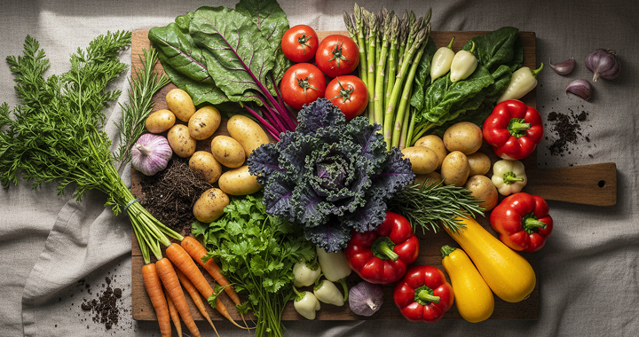
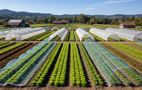
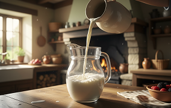
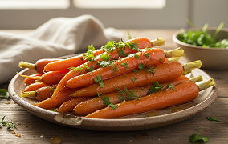
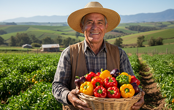
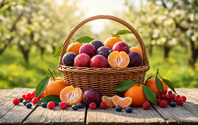

El origen de nuestra miel: Bosques nativos de Valdivia
Viajamos al sur para entender el proceso apícola sustentable detrás de cada frasco.
Consejos de nutrición, sustentabilidad, recetas rústicas y crónicas desde el Maule y el sur de Chile.

Descubre cómo aprovechar al máximo las manzanas Fuji del Maule y las hortalizas frescas de primavera en platos deliciosos, saludables y con toda la sazón de nuestra tierra sureña.
Viajamos al sur para entender el proceso apícola sustentable detrás de cada frasco.

Cómo reducir drásticamente las emisiones de CO2 al elegir productos de temporada.

Los beneficios nutricionales de los lácteos tradicionales provenientes de vacas alimentadas a pasto libre.

Un acompañamiento perfecto con toques dulces y hierbas del jardín sureño.

Conoce a Don Segundo, productor de pimientos del Maule que abastece tu mesa.

La guía definitiva para saber cuándo las bayas y cítricos están en su punto de madurez.